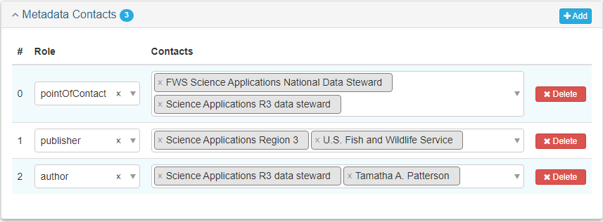

Metadata Tab
Project Records
The Metadata tab describes your project’s metadata, including a description that outlines the process of metadata creation, contributors to the creation of the metadata, and metadata repositories.
Metadata Tab
| Metadata Field | Project Records |
|---|---|
| Metadata Status | Required |
| Dates | Required |
| Metadata Contacts | |
| Author | Required |
| Publisher | Required |
| Point of Contact | Required |
| Metadata Identifier | Required |
| Parent Metadata | Required |
| Metadata Repositories | Required |
Basic Information
Metadata Status (Required)
Select the appropriate Status of the creation of your metadata from the drop down menu. For example, if you have added all of your metadata, select completed. If you still have metadata to add, select onGoing.
Dates (Required)
At least one Date is required. Recommended are creation (when you first created your metadata) and lastUpdate (when you updated metadata after initial publication).
Metadata Contacts
Contacts (Required)
These Contacts (person or role) will provide a point of contact for users to reach out to should they have any questions about the metadata. The following table shows the required contact roles.
| Role | Contact | Requirements |
|---|---|---|
| author | See Notes Below | Required |
| publisher | Default is USFWS | Required |
| pointOfContact | SA Data Steward | Required |
Metadata Contact Notes:
- The author should be an individual and can be a generic data manager.
- In most cases, the author will be the data manager, but could be anyone, including someone outside of FWS (e.g., imported FGDC metadata can list the original author).
- Publisher can also include the FWS Region and/or Program.
- The point of contact should be a Regional or National Data Steward.

Metadata Identifier
Metadata Identifier (Required)
The Identifier is automatically populated by mdEditor. The metadata identifier gives each of your projects and products a unique ID and differentiates them from other similar projects and products. Digital Object Identifiers are not needed for Projects.
- If the record was imported from ScienceBase, the Metadata Identifier will be auto-populated with the ScienceBase ID (SBID).
- If the record was created in mdEditor, it will generate a universally unique identifier (UUID).
Once a Metadata Identifier is created in the metadata, do not change it. mdEditor uses the Metadata Identifier to connect records and changing the Metadata Identifier can break those connections. If there are additional identifiers you want to include in your metadata record, include them in the Citation Identifier.
Parent Metadata (Required)
Parent Metadata tells mdEditor where the project metadata should go when it is published. If using ScienceBase, this is the folder above the project by default.
If you imported the project metadata from ScienceBase originally, this section will be populated already.
If you created the project metadata from scratch in mdEditor, this will be blank. If you provide a default parent ID in Settings (Publishing Settings for ScienceBase), this will be generated for you when when you publish. This is most likely your SA regional project folder. You can enter the parent item SBID directly in your individual metadata record if you wish.
Title (Required)
If the Title is not already populated, you can enter something like “Parent Folder”.
Identifier and Namespace (Required)
The Identifier and Namespace defines the location of the parent folder in ScienceBase.
The ScienceBase identifier is the alphanumeric string in the item’s URL immediately following “item/“. For example, 66326aebd34ea70bd5f26d62 is the SBID for the item at the URL: https://www.sciencebase.gov/catalog/item/66326aebd34ea70bd5f26d62
Metadata Repositories
Repositories (Required)
The metadata Repositories indicate where the metadata will be sent upon publishing.
For projects that should be listed in the SA Science Catalog:
- Select ”ScienceCatalog” from the repository list. ”SA Science Catalog” should automatically show up as the collection title.
- If the Collection Title does not appear, stop and enter the correct information in Settings. Then select the repository for your project.
Projects without the correct Repository and Collection Title will not show up in the SA Science Catalog.